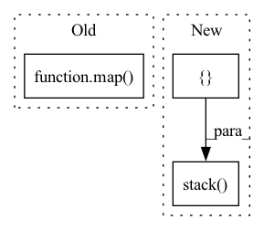

Pattern ID :28234

Before Change
query_idx = list(map(lambda x: find_pattern(x[0], x[1]), zip(search_queries, input_ids.tolist())))
if isinstance(layer, list):
representations = list(map(lambda x: x[torch.arange(num_inputs)[:, None], query_idx].mean(1), hidden_states))
else:
if layer != "all":
if layer is None:
After Change
elif layer > self.layers:
raise ValueError(f"Number of layers specified ({layer}) exceed layers in model ({self.layers})!")
// representations = hidden_states[torch.arange(num_inputs)[:, None], query_idx].mean(1)
representations = torch.stack([hs.squeeze()[idx[0]:idx[1]].mean(0) for hs, idx in zip(hidden_states.split([1] * num_inputs), query_idx)])
return representations
def extract_paired_representations(self, sentence_words: Union[Tuple[str], List[Tuple[str]]], layer:int = None) -> Tuple:
In pattern: SUPERPATTERN
Frequency: 3
Non-data size: 3
Instances
Fragment ID: 83402063
Project Name: kanishkamisra/minicons
Commit Name: b9f76e2dfc167677a5e1a4877b8bc76799a01974
Time: 2021-08-21
Author: menogetusername@gmail.com
File Name: minicons/cwe.py
M Class Name: CWE
N Class Name: CWE
M Method Name: extract_representation(3)
N Method Name: extract_representation(3)
M Parent Class: object
N Parent Class: object
M File Name: minicons/cwe.py
N File Name: minicons/cwe.py
M Start Line: 109
M End Line: 132
N Start Line: 110
N End Line: 132
'>
Before Change
else:
return None
new_state = tuple(map(reorder_state, cached_state))
utils.set_incremental_state(self, incremental_state, "cached_state", new_state)
def max_positions(self):
After Change
if incremental_state is None or len(incremental_state) == 0:
return
prev_hiddens, prev_cells, input_feed = self.get_cached_state(incremental_state)
cached_state = (prev_hiddens, prev_cells, [input_feed])
new_state = [self.reorder_state(state, new_order) for state in cached_state]
prev_hiddens_tensor = torch.stack(new_state[0])
prev_cells_tensor = torch.stack(new_state[1])
cached_state_new = torch.jit.annotate(
Dict[str, Optional[Tensor]],
{"prev_hiddens": prev_hiddens_tensor, "prev_cells": prev_cells_tensor, "input_feed": new_state[2][0]})
'>
Fragment ID: 83402064
Project Name: kssteven418/i-bert
Commit Name: 57526c63433c0b1c997fc91c0881867532567266
Time: 2020-04-16
Author: xfrui@fb.com
File Name: fairseq/models/lstm.py
M Class Name: LSTMDecoder
N Class Name: LSTMDecoder
M Method Name: reorder_incremental_state(3)
N Method Name: reorder_incremental_state(3)
M Parent Class: FairseqIncrementalDecoder
N Parent Class: FairseqIncrementalDecoder
M File Name: fairseq/models/lstm.py
N File Name: fairseq/models/lstm.py
M Start Line: 498
M End Line: 513
N Start Line: 538
N End Line: 550
'>
Before Change
self.blocks = nn.ModuleList([ReversibleBlock(f, g) for (f, g) in blocks])
def forward(self, x, arg_route = (True, True), **kwargs):
f_args, g_args = map(lambda route: kwargs if route else {}, arg_route)
block_kwargs = {"f_args": f_args, "g_args": g_args}
return _ReversibleFunction.apply(x, self.blocks, block_kwargs)
After Change
self.blocks = nn.ModuleList([ReversibleBlock(f=f, g=g) for f, g in blocks])
def forward(self, x, **kwargs):
x = torch.cat([x, x], dim=-1)
blocks = self.blocks
args = route_args(self.args_route, kwargs, len(blocks))
args = list(map(lambda x: {"f_args": x[0], "g_args": x[1]}, args))
layers_and_args = list(zip(blocks, args))
if self.training and self.layer_dropout > 0:
layers_and_args = layer_drop(layers_and_args, self.layer_dropout)
blocks, args = map(lambda ind: list(map(itemgetter(ind), layers_and_args)), (0, 1))
out = _ReversibleFunction.apply(x, blocks, args)
return torch.stack(out.chunk(2, dim=-1)).sum(dim=0)
'>
Fragment ID: 83402066
Project Name: lucidrains/linear-attention-transformer
Commit Name: fa23ce09a98a63d26116e3935ad5902cf705255d
Time: 2020-06-04
Author: lucidrains@gmail.com
File Name: linear_attention_transformer/reversible.py
M Class Name: ReversibleSequence
N Class Name: ReversibleSequence
M Method Name: forward(2)
N Method Name: forward(3)
M Parent Class: nn.Module
N Parent Class: nn.Module
M File Name: linear_attention_transformer/reversible.py
N File Name: linear_attention_transformer/reversible.py
M Start Line: 118
M End Line: 121
N Start Line: 161
N End Line: 174